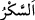

durum ise böyle değildir. Çünkü bu durumda herkes sadece başkasında meydana gelen
durumu görür.
“__WORD__ (sarhoşluk)” kişi ile aklı arasında ârız olan bir haldir. Çoğunlukla şarap
hakkında kullanılır. Öfkeden ve aşktan meydana geldiği de olur. Bu yüzden şâir şöyle
demiştir:
Aşk sarhoşluğu ve şarap sarhoşluğu ile sarhoş…
“Sekerâtü’l-mevt (ölüm sarhoşluğu)” denilmesi de buradandır. Câfer (r.a.) der ki:
“İzzet ve ceberût yaygısından, kibriyâ otağlarından müşâhede ettikleri şeyler, onları
sarhoş etti de nihayet peygamberler bile “nefsim, nefsim” diyerek ilticâ ettiler.”
O gün herkesin yaptıklarından, söylediklerinden sorulur
Korkudan ulu Peygamberlerin vücudu bile titrer
Nebilerin dehşet içinde kaldıkları bir yerde
Sen günahlarına ne bahaneler bulacaksın, söyle bakalım!
“Oysa onlar” gerçekten “sarhoş değillerdir;” Kâşifî der ki: “Sarhoşluk hâlinde
görülse bile, korku ve hayretten dolayı aklın zevaline “sarhoşluk” denilmez.” Burada
şöyle bir işâret vardır: “İlk bakışta uhrevî sûretler dünyevî sûretler gibi olsa da onların
hakikatleri arasında fark vardır. Onun için İbn Abbâs (r.anhümâ): “İsim benzerliği
dışında cennette olan hiçbir şey dünyada olan hiçbir şeye benzemez.” demiştir.
Bil ki sarhoşluğun türlü şekilleri vardır: Gaflet ve isyan şarabından, dünya ve
şehvetlerinin sevgisinden, bol nimetler içinde yaşamaktan, ilmin lezzetinden, şevkten,
muhabbetten, vuslattan, ma’rifetten, muhib ve mahbûb (seven ve sevilen) olmaktan ileri
gelen sarhoşluk gibi. Nitekim şöyle denilmiştir:
Benim için iki sarhoşluk var, pişman olan içinse bir
Onlar arasında o tek olan şeyi ben kendime has kıldım
“Fakat Allah’ın azabı çok dehşetlidir!” Allah’ın azabının korkusu onları sarar,
akıllarını başlarından uçurur ve temyiz melekelerini çekip alır.
Azab için ateşler vardır: Cehennem ateşi, (Hak’tan) uzaklık ve ayrılık ateşi, iştiyak
ateşi, fenâ finnar ateşi, bakâ binnar ateşi. Nitekim Allah Teâlâ: “Ateşin bulunduğu
yerdeki ve çevresindekiler mübarek kılınmıştır.” (en-Neml, 27/8) buyurmuştur. Nebî
(a.s.)’ın “Konuş benimle, ey Humeyrâ”[1] buyurarak Hz. Âişe’den yardım istemesi de
bu ateşin kaynamasından ve coşkunluğundandı. En doğrusunu Allah bilir.
Yahyâ b. Muâz Râzî (r.h.): “Allah, bana azâbı halkın arasında taksim etmemi
emretseydi, âşıklara bu azabdan bir hisse ayırmazdım.” demiştir.
Hâfız der ki: